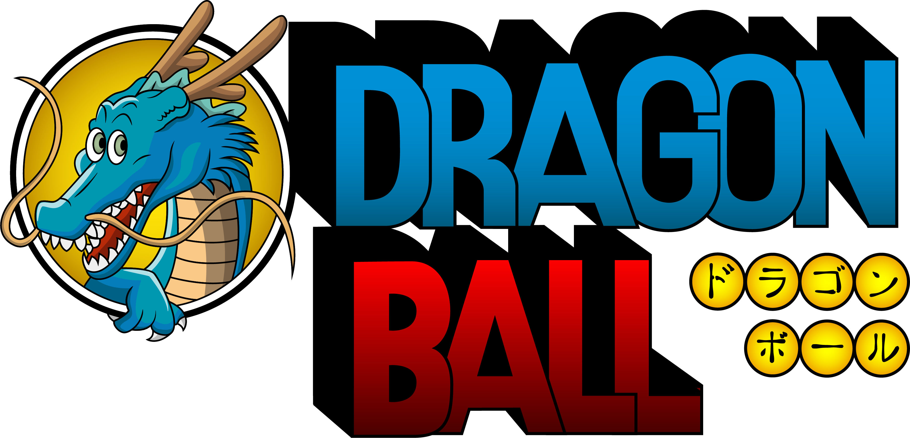

DRAGON BALL
Sinopse: Goku Son é um garoto que vive sozinho na floresta , até que uma garota chamada Bulma o encontra em sua busca por um conjunto de objetos mágicos chamados de "Dragon Balls". Já que os artefatos garantem um desejo a quem quer que colete todos os sete, Bulma espera reuni-los e desejar um namorado perfeito.